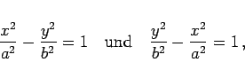

Inhalt Index DeskTop Bronstein

 Geometrie Vektoralgebra und analytische Geometrie Analytische Geometrie der Ebene Hyperbel
Geometrie Vektoralgebra und analytische Geometrie Analytische Geometrie der Ebene Hyperbel


Konjugierte Hyperbeln haben die Gleichungen
|  | (3.360) |
wobei die zweite Hyperbel in der Abbildung rot dargestellt ist. Sie besitzen gemeinsame Asymptoten derart, daß die reelle Achse der einen die imaginäre Achse der anderen ist und umgekehrt.